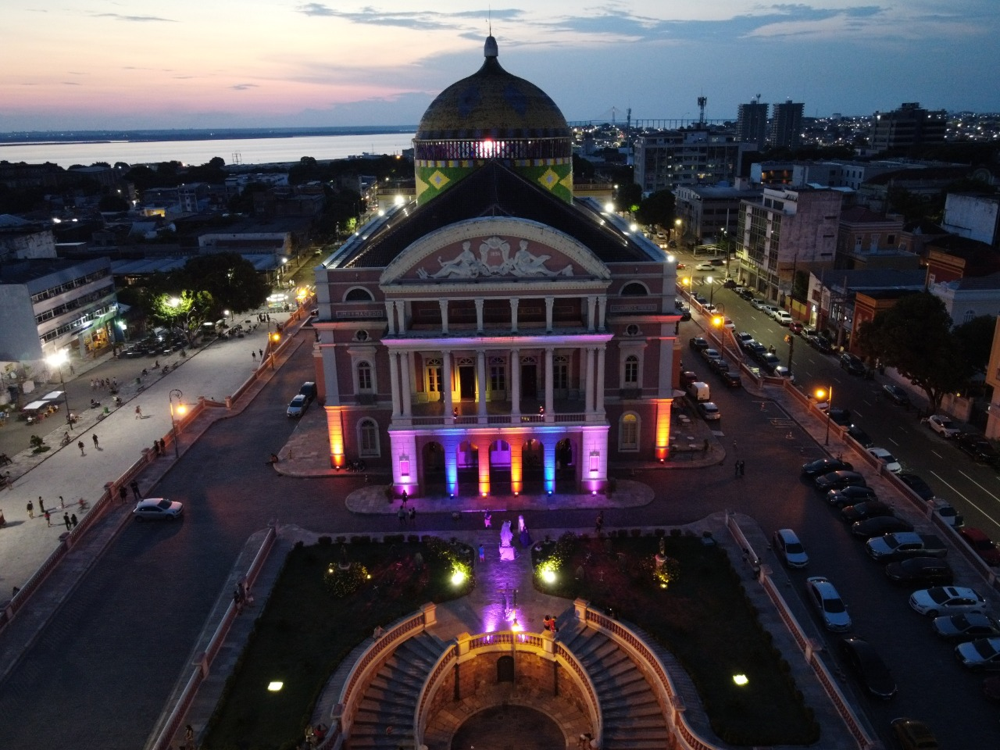
Norte
📍 Manaus - AM
Cercada pela Floresta Amazônica, Manaus é famosa pelo Teatro Amazonas e pelo encontro das águas.
Explore destinos incríveis, cultura e gastronomia
Conheça três lugares marcantes de cada região do país.
O Brasil é um país de dimensões continentais, repleto de paisagens únicas, riquezas culturais e experiências inesquecíveis. De norte a sul, cada região apresenta destinos que encantam por sua beleza natural, história e tradição.

Cercada pela Floresta Amazônica, Manaus é famosa pelo Teatro Amazonas e pelo encontro das águas.
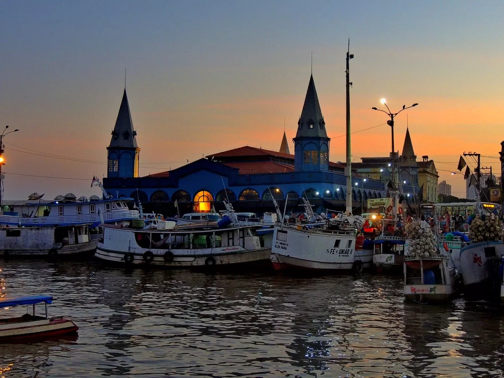
Belém se destaca pela cultura amazônica, pelo Mercado Ver-o-Peso e pela culinária regional.
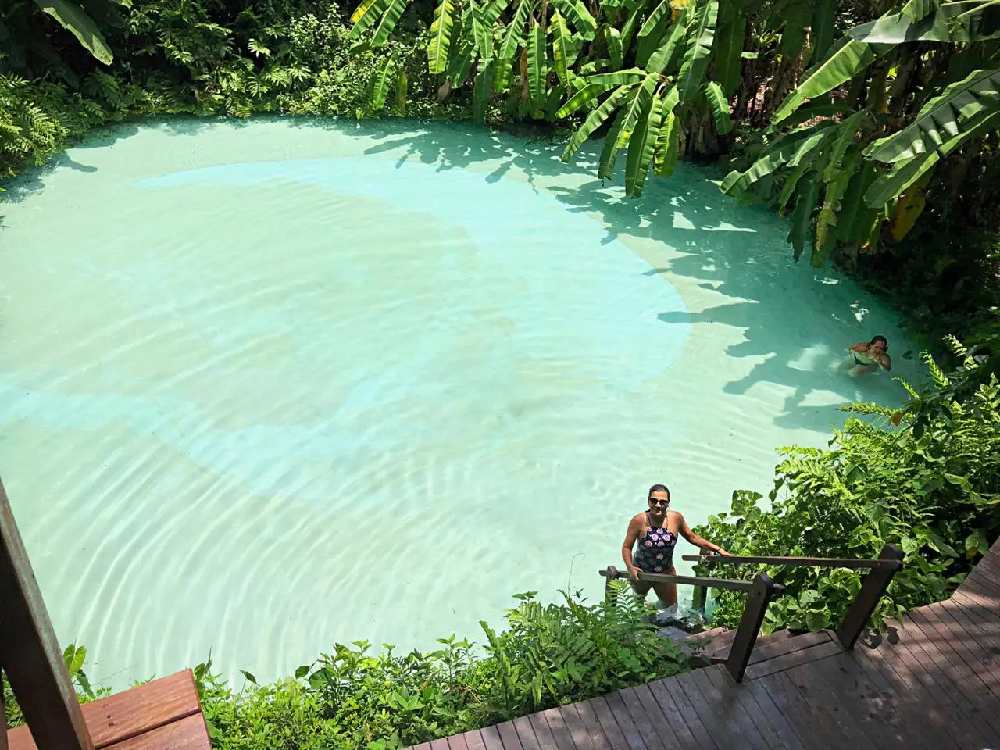
Destino conhecido por suas dunas, cachoeiras e fervedouros de águas cristalinas.
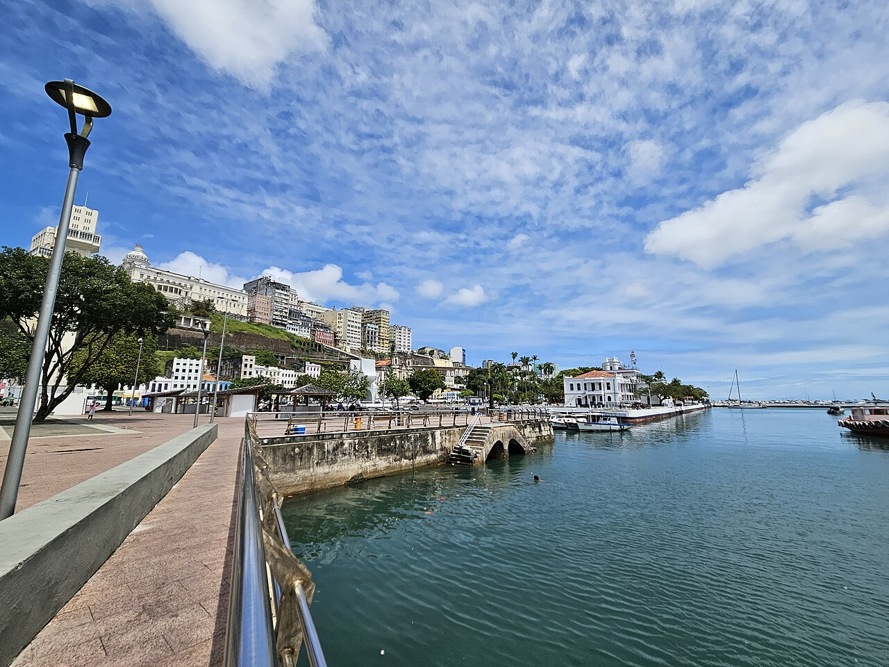
História, cultura afro-brasileira, arquitetura colonial e uma culinária marcante.
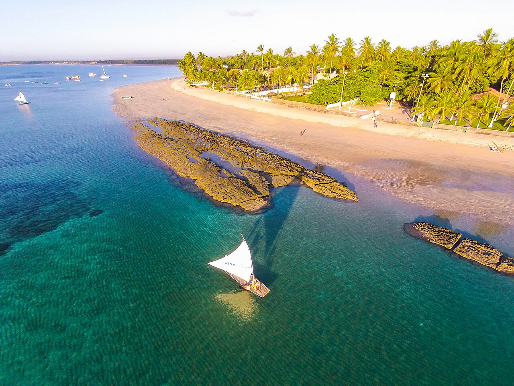
Praias paradisíacas, águas transparentes e piscinas naturais encantam visitantes de todo o mundo.
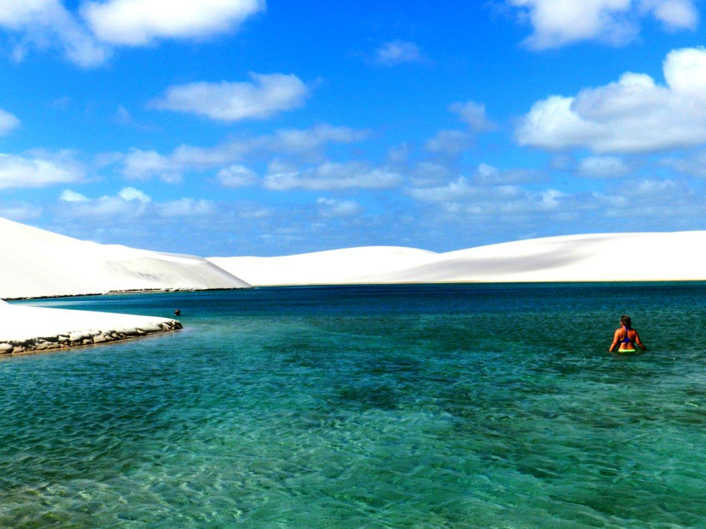
Um dos cenários mais impressionantes do Brasil, com dunas brancas e lagoas cristalinas.
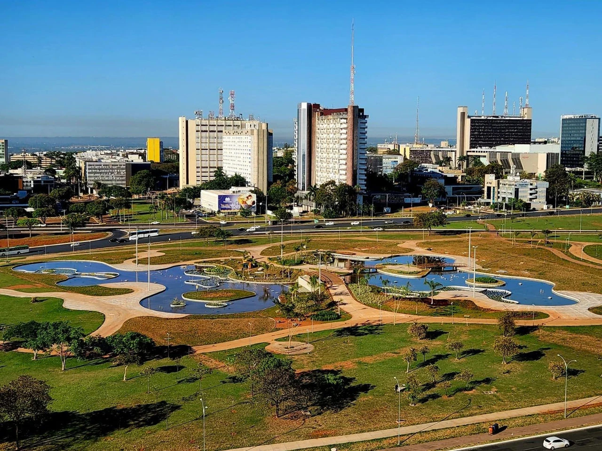
A capital do país impressiona pela arquitetura moderna e por seus importantes monumentos nacionais.
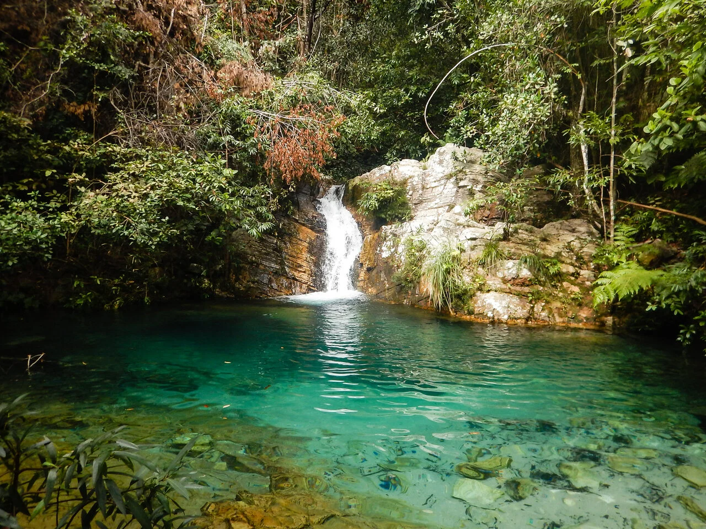
Parque nacional famoso por trilhas, cachoeiras e paisagens exuberantes.
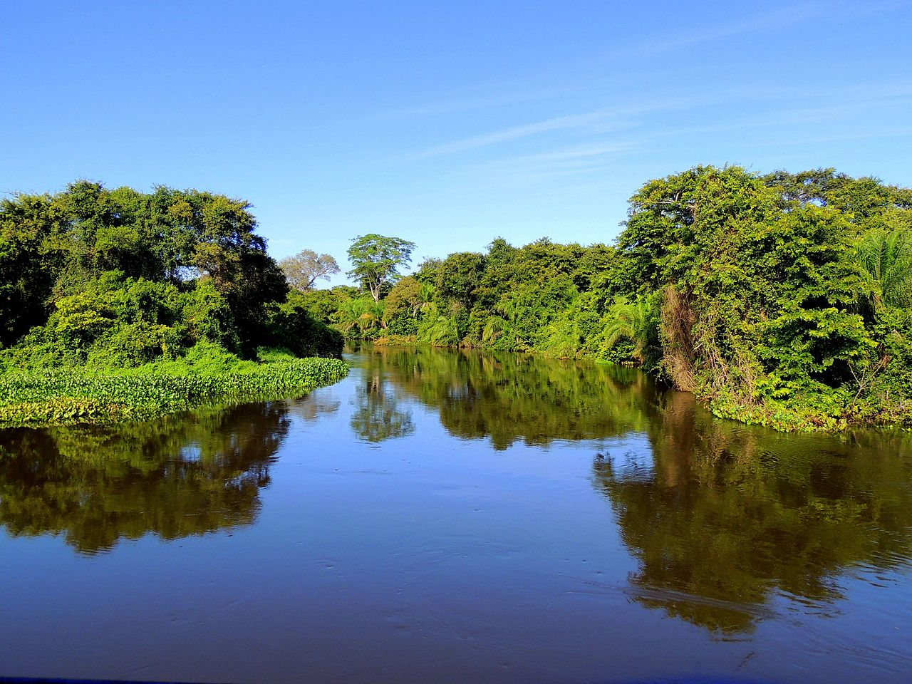
Uma das maiores áreas alagadas do planeta, ideal para ecoturismo e observação da fauna.

Cartão-postal do Brasil, com praias famosas, Cristo Redentor e o Pão de Açúcar.
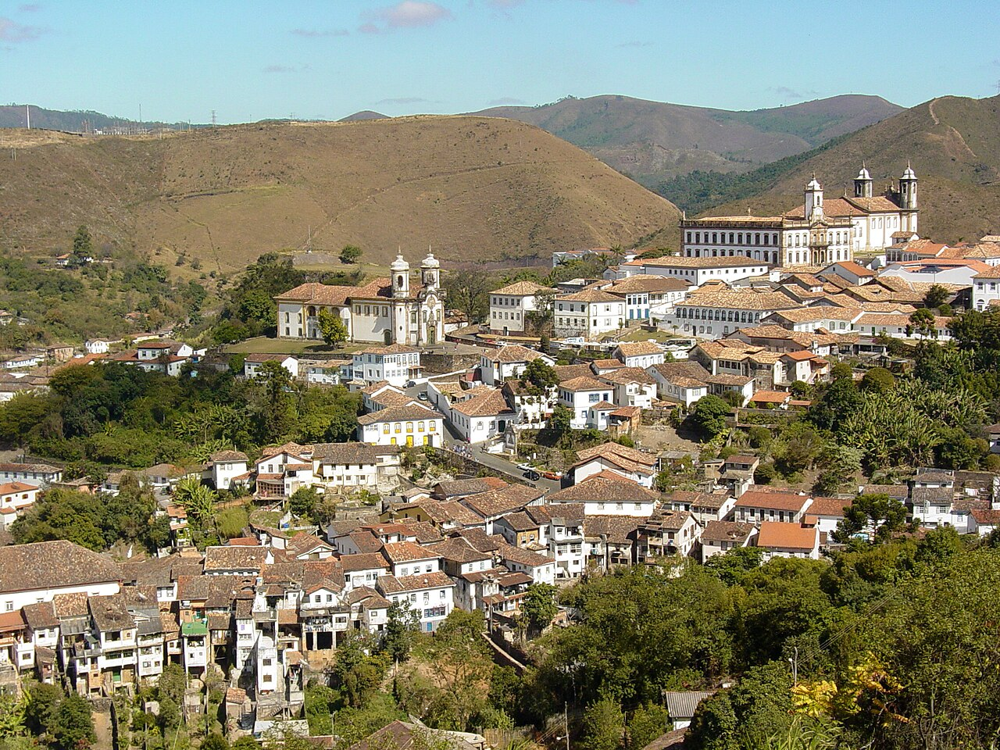
Cidade histórica conhecida por sua arquitetura colonial e importância cultural.
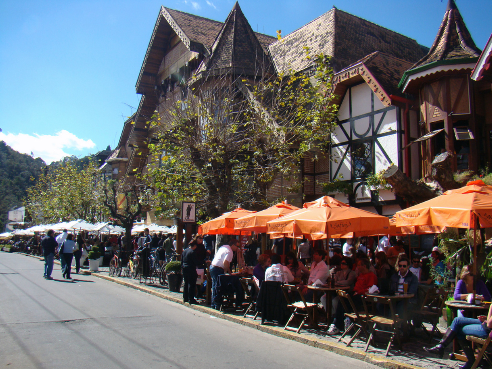
Destino charmoso com clima de montanha, gastronomia refinada e arquitetura europeia.
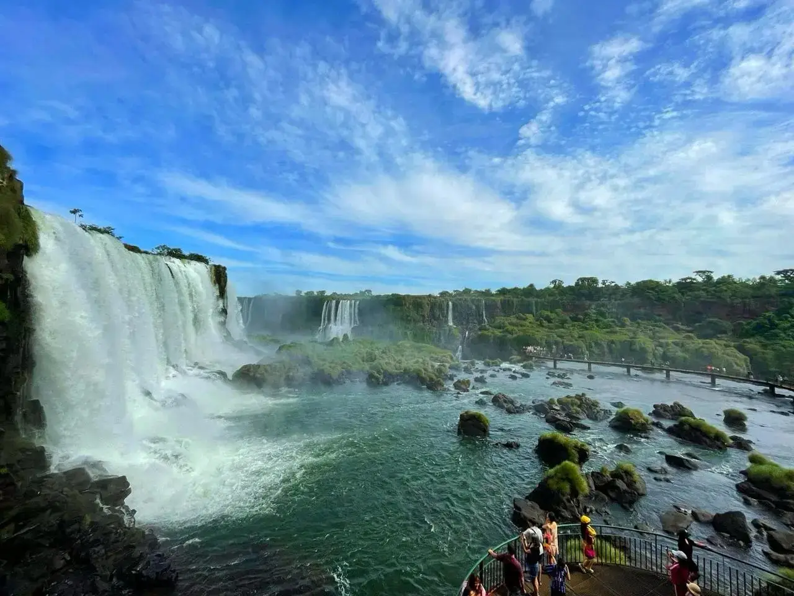
As Cataratas do Iguaçu formam um dos maiores espetáculos naturais do mundo.
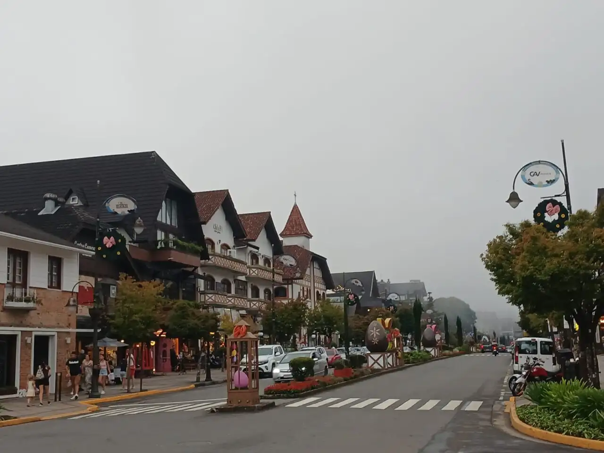
Clima aconchegante, belas paisagens e forte tradição gastronômica.
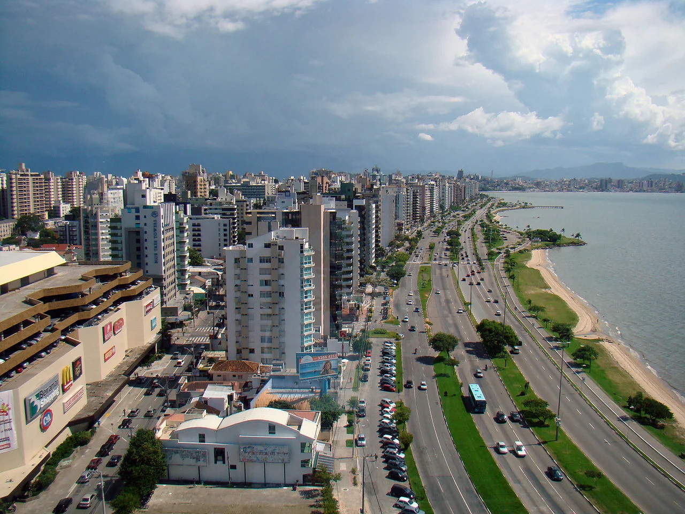
Ilha famosa por suas praias, natureza preservada e excelente qualidade de vida.